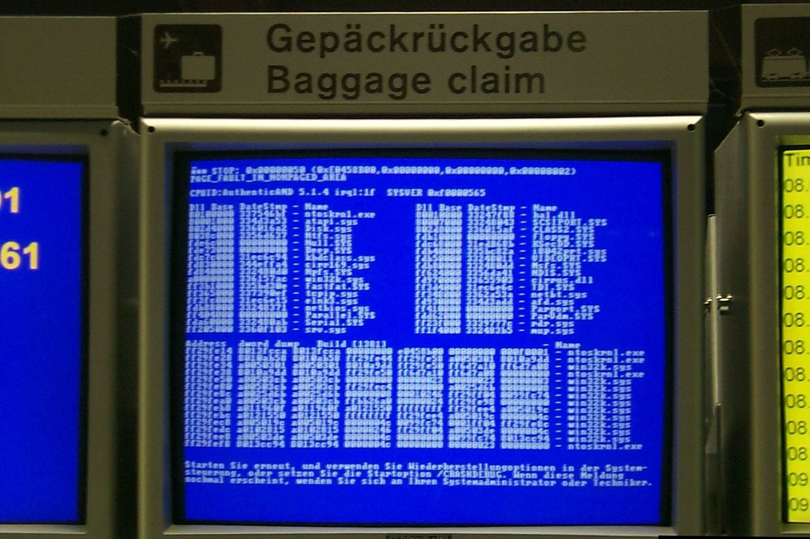
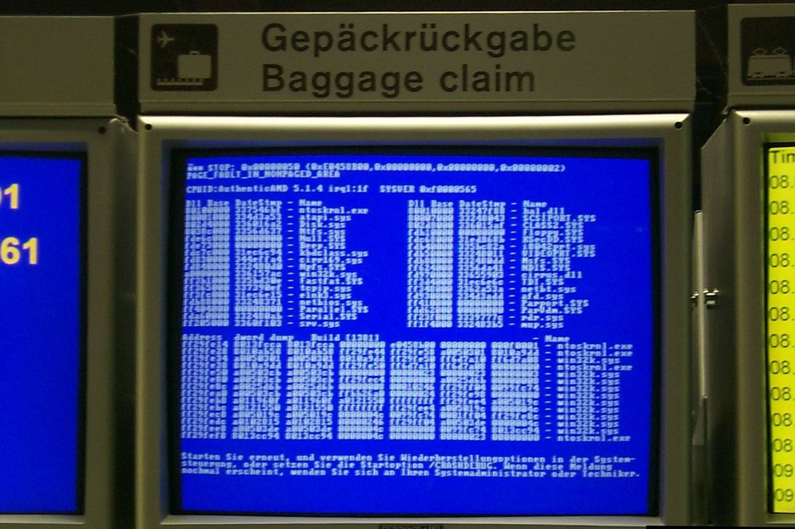

History
BSoDs have been around since Windows 1.0. In Windows 1.x-2.x, if Windows found a newer DOS version than it expected it would give a blue screen with white text saying "Incorrect DOS version" followed by a list of loaded kernel modules and their respective memory addresses, before starting normally. This BSoD, however, was triggered by a bug in the logo code, and was not an actual crash screen; when the system did crash, it would either lock up or exit to DOS. Windows 3.0 had a modal dialog for displaying important system messages, usually from digital device drivers in 386 enhanced mode, or other situations where a program could not run unless an issue was resolved.
In Windows 3.1, this modal dialog was changed from black to blue, and it would be displayed when pressing Ctrl+Alt+Del (which opens Task Manager) while no programs were unresponsive. Windows 3.x continued to exit to DOS if an error was severe enough.
BSoDs have been present in Windows NT 3.1 (the first version of the Windows NT family, released in 1993) and all Windows operating systems released afterwards. BSoDs can be caused by poorly written device drivers or malfunctioning hardware, such as faulty memory, power supply issues, overheating of components, or hardware running beyond its specification limits. In the Windows 9x era, incompatible DLLs or bugs in the operating system kernel could also cause BSoDs. Because of the instability and lack of memory protection in Windows 9x, BSoDs were much more common.
 
